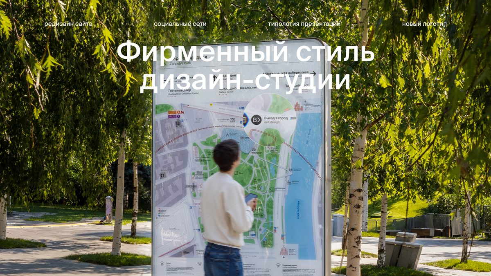
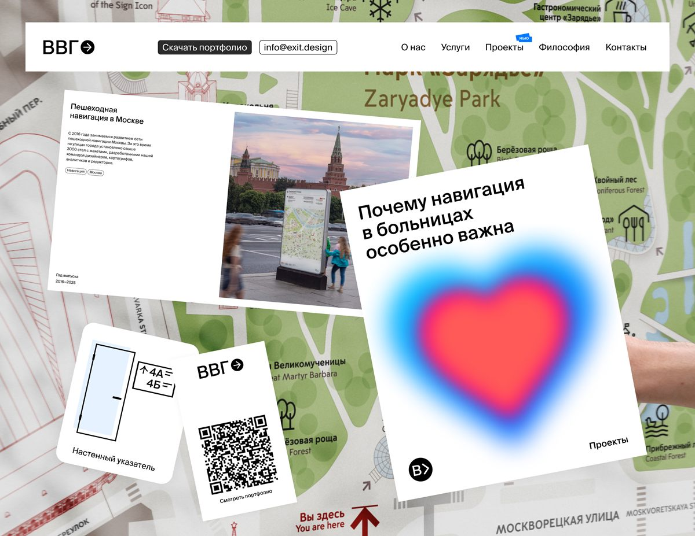
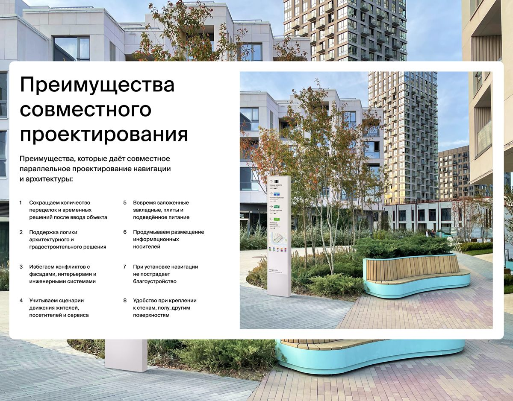
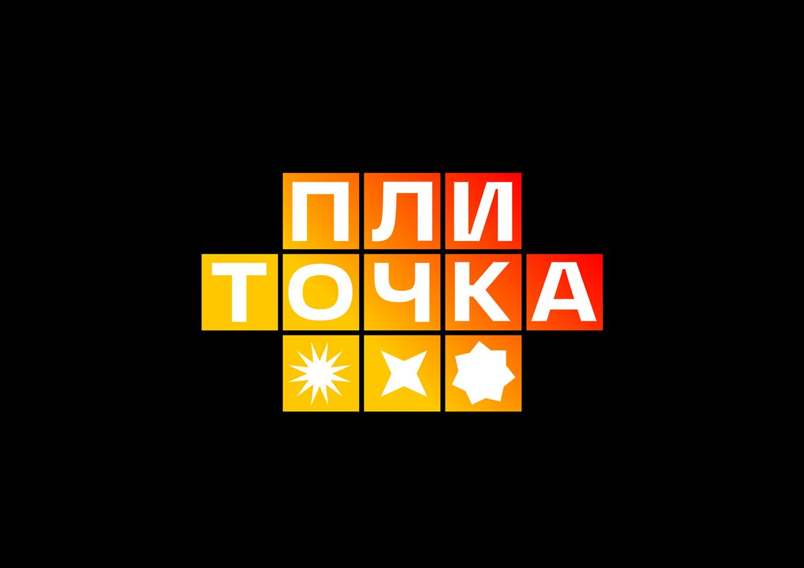
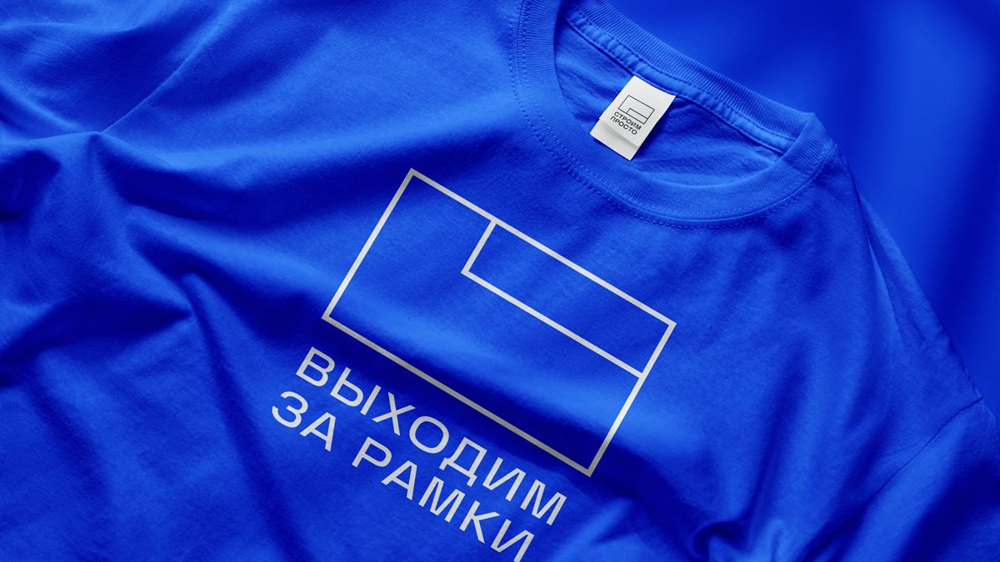
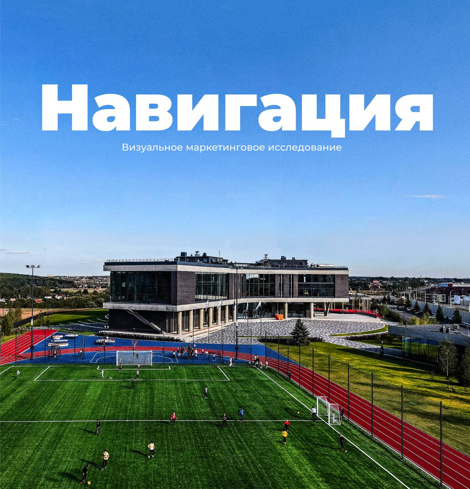

Denis Sivukhin — graphic designer

Website for Vykhod v Gorod

Presentation style for Vykhod v Gorod

Packaging for Era

Logo for Plitochka store

StroimProsto identity
Rostelecom conference identity concept

Visual research for HSE University
No projects in this category yet.